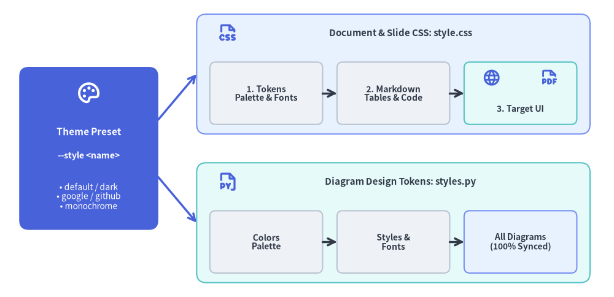
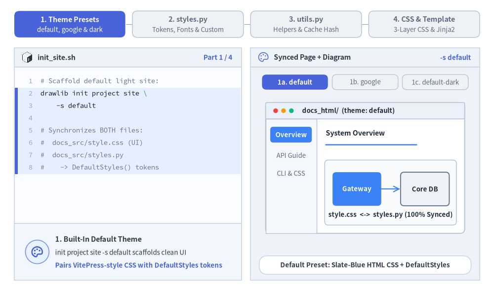
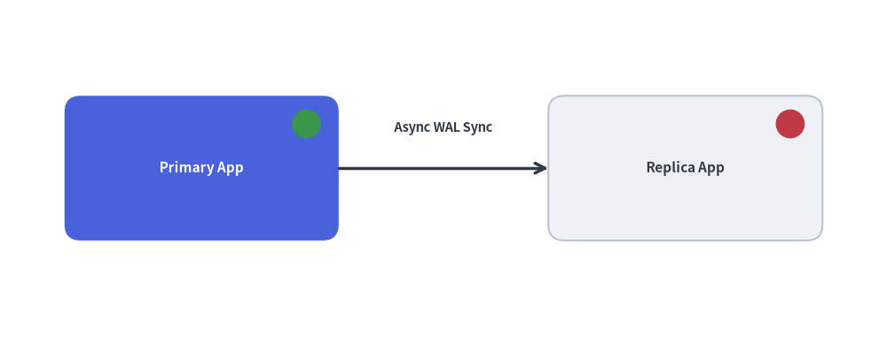

テンプレートと CSS カスタマイズ: テーマとコード注入
Drawlib は、企業のデザインシステムや独自の開発ワークフローへシームレスに統合できるよう設計されています。HTML レイアウト構造のカスタマイズ、スタイルシートの調整、およびプロジェクト全体で共有する Python 描画ヘルパーやスタイル定義の注入が可能です。
単一のテーマプリセット（--style <preset>）を指定するだけで、ドキュメント用 CSS（style.css）と図解用デザイントークン（styles.py）の両方が同期されます。

Source Code
from drawlib.canvas import save, setup
from drawlib.icons import phosphor
from drawlib.lines import line
from drawlib.shapes import rectangle
from drawlib.styles import Styles
from drawlib.text import text
setup(width=128, height=62)
# Left Focal Card: Single Theme Preset
rectangle((18.5, 31), width=29, height=34, style=Styles.PrimaryFlat.patch(shape_r=2.0))
phosphor.palette((18.5, 42.5), width=5.2, style=Styles.WhiteBold)
text((18.5, 34.5), "Theme Preset", style=Styles.WhiteBold.patch(text_size=11.0))
text((18.5, 29.5), "--style <name>", style=Styles.WhiteBold.patch(text_size=10.2))
text((18.5, 21.0), "• default / dark\n• google / github\n• monochrome", style=Styles.White.patch(text_size=10.0))
# Branching connectors
line((33, 37), (41, 46.5), arrow_head="->", style=Styles.PrimaryBold)
line((33, 25), (41, 15.5), arrow_head="->", style=Styles.PrimaryBold)
# Top Branch: Document & Slide Styling (style.css)
rectangle((82, 46.5), width=82, height=25, style=Styles.PrimaryNeutral.patch(shape_r=2.0))
phosphor.file_css((47.5, 55.0), width=4.4, style=Styles.PrimaryBold)
text((83.5, 55.0), "Document & Slide CSS: style.css", style=Styles.DarkBold.patch(text_size=10.8))
rectangle(
(55.5, 42.5),
width=23.5,
height=13,
style=Styles.Neutral.patch(shape_r=1.2),
text="1. Tokens\nPalette & Fonts",
text_style=Styles.DarkBold.patch(text_size=10.0),
)
rectangle(
(82.0, 42.5),
width=23.5,
height=13,
style=Styles.Neutral.patch(shape_r=1.2),
text="2. Markdown\nTables & Code",
text_style=Styles.DarkBold.patch(text_size=10.0),
)
rectangle((108.5, 42.5), width=23.5, height=13, style=Styles.SecondaryNeutral.patch(shape_r=1.2))
phosphor.globe((102.5, 45.8), width=3.8, style=Styles.PrimaryBold)
phosphor.file_pdf((114.5, 45.8), width=3.8, style=Styles.PrimaryBold)
text((108.5, 39.2), "3. Target UI", style=Styles.DarkBold.patch(text_size=10.0))
line((67.25, 42.5), (70.25, 42.5), arrow_head="->", style=Styles.DarkBold)
line((93.75, 42.5), (96.75, 42.5), arrow_head="->", style=Styles.DarkBold)
# Bottom Branch: Diagram Canvas Styling (styles.py)
rectangle((82, 15.5), width=82, height=25, style=Styles.SecondaryNeutral.patch(shape_r=2.0))
phosphor.file_py((47.5, 24.0), width=4.4, style=Styles.PrimaryBold)
text((83.5, 24.0), "Diagram Design Tokens: styles.py", style=Styles.DarkBold.patch(text_size=10.8))
rectangle(
(55.5, 11.5),
width=23.5,
height=13,
style=Styles.Neutral.patch(shape_r=1.2),
text="Colors\nPalette",
text_style=Styles.DarkBold.patch(text_size=10.0),
)
rectangle(
(82.0, 11.5),
width=23.5,
height=13,
style=Styles.Neutral.patch(shape_r=1.2),
text="Styles &\nFonts",
text_style=Styles.DarkBold.patch(text_size=10.0),
)
rectangle(
(108.5, 11.5),
width=23.5,
height=13,
style=Styles.PrimaryNeutral.patch(shape_r=1.2),
text="All Diagrams\n(100% Synced)",
text_style=Styles.DarkBold.patch(text_size=10.0),
)
line((67.25, 11.5), (70.25, 11.5), arrow_head="->", style=Styles.DarkBold)
line((93.75, 11.5), (96.75, 11.5), arrow_head="->", style=Styles.DarkBold)
save()
1. インタラクティブなテーマ設定＆注入コードツアー
-s <preset>（default、google、default-dark、monochrome）を指定してプロジェクトをスキャフォールディングすると、HTML／PDF／スライド用スタイルシート（style.css）、注入される Python デザイントークン（styles.py）、再利用可能な複合ヘルパー（.drawlib/cache.db の SHA-256 ハッシュで自動追跡される utils.py）、および Jinja2 の template.html レイアウトスロットが一貫して同期されます。

2. HTML テンプレートのカスタマイズ (template.html)
すべての Drawlib のサイトおよび PDF プロジェクトには、ソースディレクトリ内に Jinja2 テンプレート（template.html）が含まれています。このファイルを編集することで、以下のカスタマイズが可能です。
- コーポレートブランディング、ヘッダーナビゲーションバー、企業ロゴの組み込み。
- 外部 Web アクセス解析（Google Analytics、Plausible など）やテレメトリスクリプトの追加。
- カスタム Google Fonts や外部 CSS フレームワークの読み込み。
Drawlib が提供するテンプレート変数:
{{ title }}: 現在のドキュメントのタイトルまたはサイトブランド名。{{ body }}: Markdown と埋め込み図解からコンパイルされた HTML 本文コンテンツ。{{ nav_sections }}/{{ nav_items }}: サイドバー用の構造化ナビゲーションツリー（siteプロジェクト用）。{{ toc_items }}: 右側目次用の構造化された見出しアウトライン（siteプロジェクト用）。{{ css_href }}:style.cssへの相対パス。{{ custom_css }}: 注入されるインライン CSS オーバーライド（CJK / RTL 向け自動組版ルールを含む）。{{ html_lang }}&{{ html_dir }}:drawlib.tomlから解決された現在のロケールコード（en,ja,ar等）と書字方向（ltrまたはrtl）。{{ lang_switcher }}&{{ alternate_links }}:[i18n]でlen(langs) > 1の場合に自動生成される言語スイッチャー HTML と<link rel="alternate" hreflang="...">メタデータ。
3. CSS スタイルシートのカスタマイズ (style.css)
Drawlib プロジェクトのソースフォルダには、3 層アーキテクチャ（レイヤー 1: テーマトークン、レイヤー 2: コード＆Markdown コンポーネント、レイヤー 3: site・doc・pdf・slide 向けのターゲットレイアウト）で構築されたローカルの style.css が含まれています。このスタイルシートを直接編集して、配色、タイポグラフィ、余白を自由に変更できます。
組み込み CSS テーマプリセット一覧:
| テーマプリセット | HTML / Site | PDF / Doc | Slide | 説明 |
|---|---|---|---|---|
default |
対応 | 対応 | 対応 | VitePress と Tailwind CSS に着想を得たモダンな開発者向けライトテーマ。 |
default-dark |
対応 | 対応 | 対応 | 深いスレート＆インディゴ配色のモダンな開発者向けダークテーマ。 |
default-auto |
対応 | 非対応 | 非対応 | @media (prefers-color-scheme) によりライト／ダークを自動切替するレスポンシブテーマ。 |
google |
対応 | 対応 | 対応 | Google Blog および Material Design 風のクリーンなエディトリアルライトスタイル。 |
google-dark |
対応 | 対応 | 対応 | Material Dark パレットを採用した Google エディトリアルダークテーマ。 |
google-auto |
対応 | 非対応 | 非対応 | ライトとダークを自動切替する Google エディトリアルレスポンシブテーマ。 |
github |
対応 | 対応 | 非対応 | おなじみのコードブロックや表デザインを備えた GitHub Flavored Markdown スタイル。 |
minimal |
対応 | 対応 | 非対応 | 装飾を抑えて読書に集中できる軽量ミニマルタイポグラフィ。 |
monochrome |
対応 | 対応 | 対応 | 公式出版物や印刷に適した高コントラストなモノクロスタイル。 |
組み込み CSS テーマの確認とエクスポート (drawlib css):
drawlib css list および drawlib css show を使用すると、組み込みのテーマプリセットを確認したり、ローカルの style.css を上書きエクスポートしたりできます。
# List all available CSS presets for HTML and PDF targets:
drawlib css list
# Export the Google HTML theme to your project's style.css:
drawlib css show html google -o docs_src/style.css --force
# Export the GitHub HTML theme:
drawlib css show html github -o docs_src/style.css --force
# Export the Monochrome PDF theme:
drawlib css show pdf monochrome -o doc_src/style.css --force
4. プロジェクト共通スタイルの注入 (styles.py)
個々の図解ごとにカスタムカラーやフォントスタイルを再宣言したり、場当たり的なスタイル変数を散在させたりする代わりに、ソースディレクトリ内に styles.py ファイルを定義できます。
プロジェクトのソースディレクトリに配置する（または -s docs_src/styles.py で渡す）と、Drawlib は styles.py を読み込んでプロジェクト全体の Colors および Styles デザイントークンを構成します。
# docs_src/styles.py
from drawlib.fonts import FontRoboto
from drawlib.preset_colors import GoogleColors
from drawlib.preset_styles import GoogleStyles
# 1. Initialize project-wide color palette and style catalog
Colors = GoogleColors()
Styles = GoogleStyles().patch_font(
regular=FontRoboto.ROBOTO_REGULAR,
bold=FontRoboto.ROBOTO_BOLD,
thin=FontRoboto.ROBOTO_THIN,
)
# 2. Derive reusable custom component tokens
CustomCard = Styles.PrimaryNeutral.patch(
shape_line_width=1.5,
text_size=10.0,
)
利用可能なプリセット Styles および Colors クラス:
drawlib.preset_styles:DefaultStyles,DefaultDarkStyles,GoogleStyles,GoogleDarkStyles,MonochromeStyles,MonochromeDarkStylesdrawlib.preset_colors:DefaultColors,GoogleColors,MonochromeColors,CssColors
from drawlib.styles import Styles, Colors によるシームレスなテーマ適用
styles.py が存在する場合、標準トークンをインポートするすべての埋め込み drawlib ブロックは、自動的にこれらの設定を継承します。
# Inside your Markdown drawing code:
from drawlib.canvas import setup
from drawlib.shapes import rectangle
from drawlib.styles import Styles
setup(width=80, height=40)
# Automatically rendered using the GoogleStyles theme and Roboto fonts configured in styles.py
rectangle((40, 20), width=50, height=25, style=Styles.PrimaryFlat, text="Unified Themed Card", text_style=Styles.WhiteBold)
style.css および drawlib.toml との一貫したデザイン統合
drawlib init project <type> --style google（または monochrome、default、default-dark、google-dark）を使用してプロジェクトをスキャフォールディングすると、Drawlib は選択された style と [i18n] ロケール設定を drawlib.toml に記録しつつ、Python 図解用の styles.py と HTML／PDF／スライド用の style.css の両方を自動的に同期させます。これにより、ドキュメントの本文と埋め込まれたアーキテクチャ図解が 100% 統一されたビジュアルアイデンティティを共有します。
ロケール別の styles.py / utils.py オーバーライド (<src_dir>/<lang>/)
多言語構成の doc・site・slide プロジェクト（drawlib.toml で langs = ["en", "ja"] 等を指定）では、既定でルート直下の styles.py と utils.py が全ロケールに適用されます。特定のロケールで CJK フォント（ja/ における FontJapanese など）や言語固有のヘルパー関数を使用したい場合は、<src_dir>/<lang>/styles.py や <src_dir>/<lang>/utils.py を配置してください。該当ロケールの図解ビルド時にロケール別ファイルが優先解決され、未配置時はルートの styles.py / utils.py へ自動フォールバックします。
5. 共通ヘルパー関数の注入 (utils.py)
専用のサーバーラック、ステータスバッジ、複合アイコンといった再利用可能な複合描画要素については、utils.py 内にカスタム関数を作成します。
from drawlib.canvas import save, setup
from drawlib.lines import line
from drawlib.shapes import circle, rectangle
from drawlib.styles import Styles
from drawlib.text import text
# Defined in docs_src/utils.py (imported as `import utils` in Markdown blocks):
def draw_server_node(xy: tuple[float, float], name: str, *, is_active: bool = True) -> None:
x, y = xy
style = Styles.PrimaryFlat.patch(shape_r=2.0) if is_active else Styles.Neutral.patch(shape_r=2.0)
t_style = Styles.WhiteBold.patch(text_size=11.0) if is_active else Styles.DarkBold.patch(text_size=11.0)
rectangle((x, y), width=34, height=18, style=style, text=name, text_style=t_style)
# Status indicator LED (Green = Active, Red = Standby/Offline)
indicator_style = Styles.SuccessFlat if is_active else Styles.DangerFlat
circle((x + 13, y + 5.5), radius=1.8, style=indicator_style)
# Inside your Markdown drawing code (`drawlib build ... -u docs_src/utils.py`):
setup(width=110, height=42)
draw_server_node((25, 21), "Primary App", is_active=True)
draw_server_node((85, 21), "Replica App", is_active=False)
line((42, 21), (68, 21), arrow_head="->", style=Styles.DarkBold)
text((55, 26.0), "Async WAL Sync", style=Styles.DarkBold.patch(text_size=10.5))
save()
